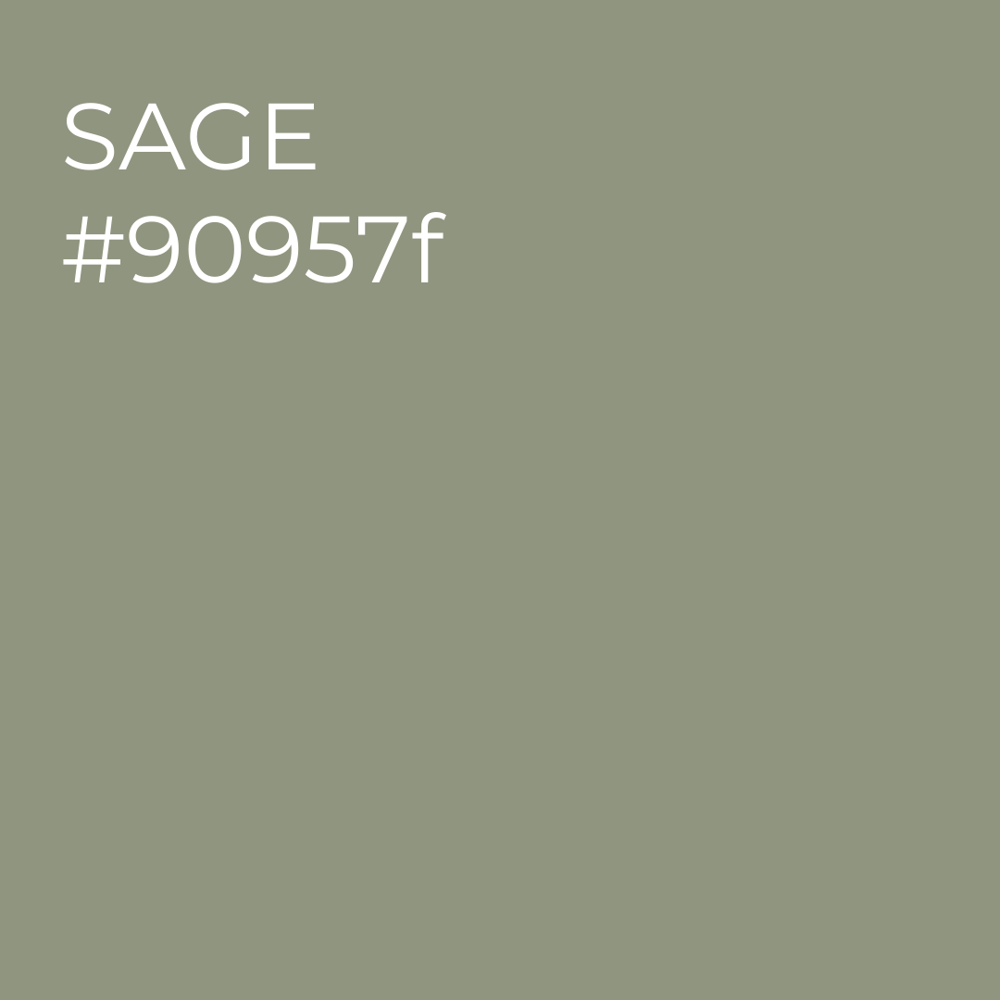

SAGE
Sage is a soft green that works well in almost any room. Sage furniture can make a living room feel grounded and relaxed. Sage wallpaper in a bedroom adds a calm, natural backdrop for rest. It pairs beautifully with wood, linen, and soft lighting. This shade fits right into modern earthy home decor and helps rooms feel welcoming without being overpowering.
Shop the Look:
Organic Linen Throw →